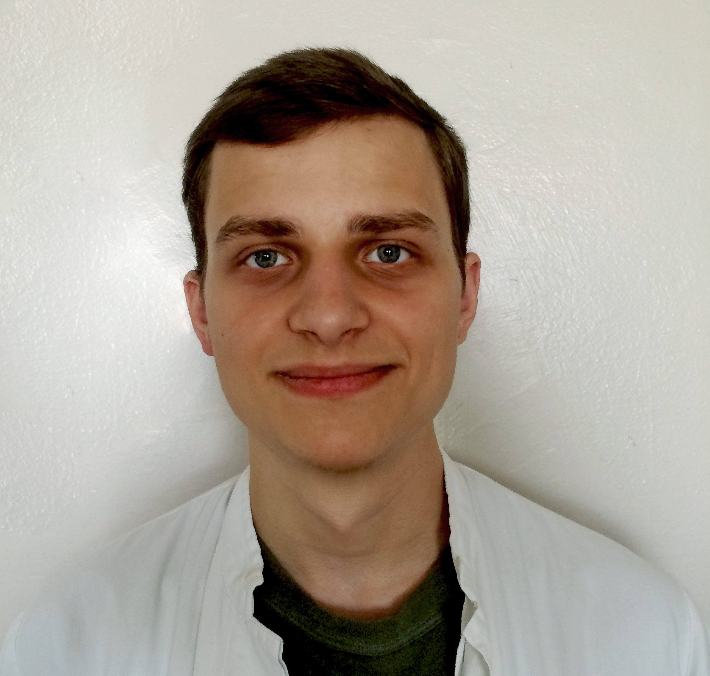

⌂ CURRICILUM VITAE✍ PIBLICATIONS✉ CONTACT

Охремчук Артур Эдуардович (стажёр младшего научного сотрудника)Родился 6 августа 1995 года в г. Ивацевичи. С 2001 по 2012 гг. проходил обучение в СШ №4 г. Ивацевичи. В 2012 году поступил, а в 2017 году окончил биологический факультет БГУ. Тема дипломной работы "Характеристика углеводородутилизирующих бактерий Rhodococcus pyridinivorans"[elib][pdf].
В 2017 году поступил в магистратуру БГУ, тема магистерской диссертации "Характеристика природных нефтеокисляющих бактерий".
Научный руководитель - Чернявская Мария Ивановна (➦).